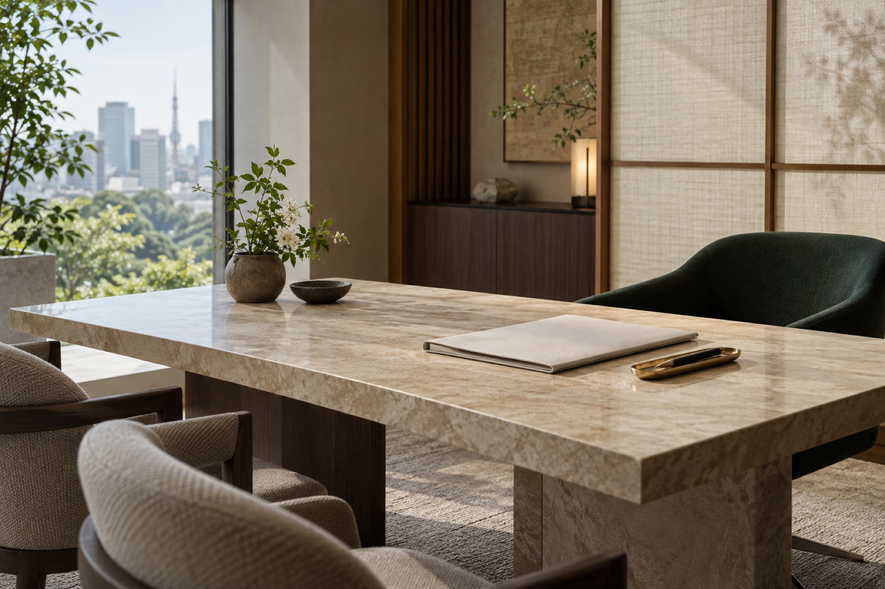
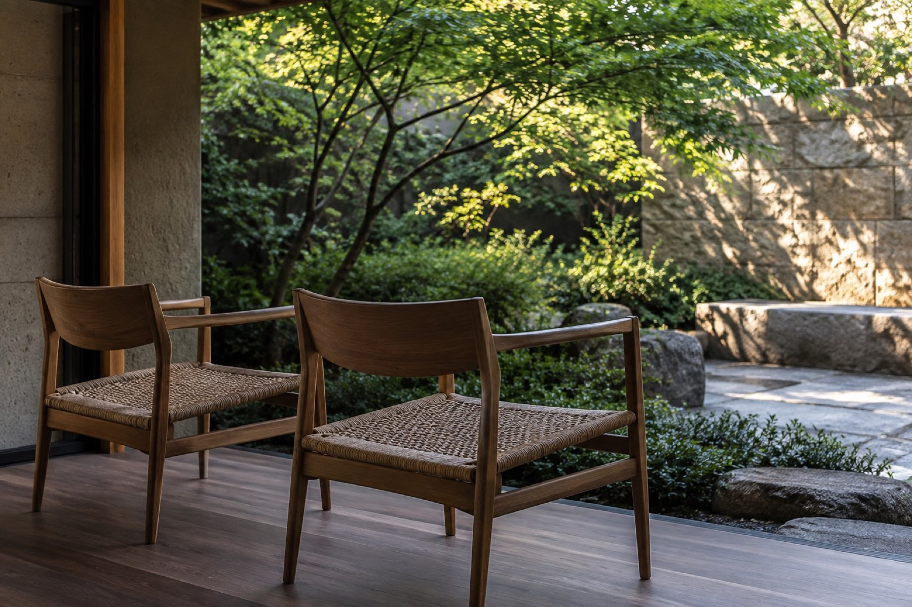
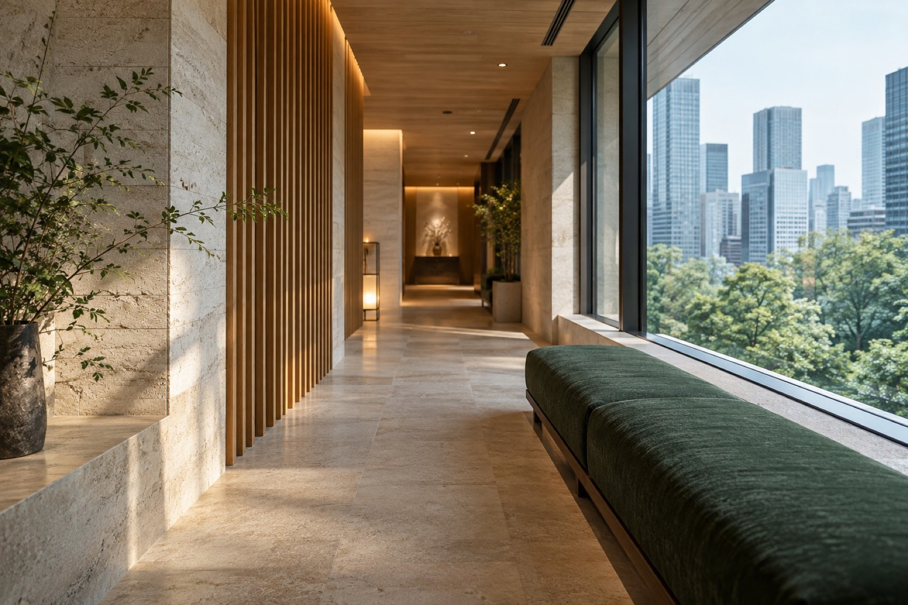

SHŌで
サービス情報を確認
SHŌは XIUYI の AI アシスタントです。検査資料やよくあるご質問、渡航前の準備事項を整理できます。診療上の判断は医療機関にご相談ください。
- 初めて日本で人間ドックを受けます。何から準備すればよいですか。
- 滞在は 4 日間です。検査と美容医療を同じ日程に入れられますか。
- 母（68 歳）を連れて行きます。付き添いはどこまでお願いできますか。
初めて日本で人間ドックを受けます。何から準備すればよいですか。
はじめての人間ドックでしたら、次の三つから準備を始めると進めやすくなります。
1. 受診の目的を整理する 気になる症状、ご家族の病歴、これまでの検査結果をまとめておくと、検査コースと医療機関を選びやすくなります。
2. 日程の目安を決める 医療機関の予約に合わせて、渡航と滞在の日程を組みます。
3. 前日と当日の注意を確認する 食事や服薬の制限は検査内容によって異なります。予約後に医療機関からの案内をご確認ください。
これまでの検査結果があれば、翻訳を含めて担当者が整理します。
参考資料
- XIUYI 参考資料 1
- XIUYI 参考資料 2
ログインすると SHŌ をご利用いただけます。ログイン
表示中の回答は例です。AIの回答は参考情報であり、診断ではありません。
医療サービス

精密健診
人間ドック・精密健診。ご希望の検査に合わせて医療機関を選び、予約を調整します。
サービスの詳細
医療受診
専門医の受診。既往の検査結果と今回の受診目的を踏まえて相談内容を整理し、診療の予約を調整します。
サービスの詳細
再生医療
幹細胞・NK 細胞療法。ご希望に応じて、医療機関や医師との連携を支援します。
サービスの詳細
美容医療
美容医療・アンチエイジング。施術を行う医療機関の予約と、当日の同行を調整します。
サービスの詳細
同行・医療通訳
受診には専任の担当者が同行し、中国語・英語・日本語で医療通訳を行います。
サービスの詳細
生殖補助医療
体外受精など。医療機関との連携を支援し、診療資料の翻訳にも対応します。
サービスの詳細移動・宿泊サポート
フライトと受診予定に合わせ、空港送迎、宿泊、医療機関間の移動を手配します。
サービスの詳細XIUYI が
選ばれる理由
診断と治療は医療機関と医師が行います。XIUYI はその前後と当日を整えます。
日本の正規医療機関と連携
健診、美容医療、再生医療、生殖補助医療などのご希望に応じて医療機関や医師との連携を支援し、診療資料の翻訳にも対応します。
専任担当者による一貫した調整
初回相談から医療機関の予約、滞在中の受診、受診後の連絡まで、専任担当者が調整します。
移動・宿泊のサポート
医療機関の予約に合わせ、送迎、宿泊、滞在日程を調整します。付帯サービスは別途お見積りします。

サポート内容
- 医療ニーズの確認と予約調整
- 既往の検査結果、病歴、今回の受診目的を踏まえて相談内容を整理し、検査や診療の予約を調整します。
- 中国語・英語・日本語での同行サポート
- 来院から退出まで担当者が同席します。医師の説明はその場で通訳し、疑問もその場で伺えます。
- 医療機関・医師とのマッチング
- 検査内容に応じて施設と専門医を選定し、予約・資料提出・日程調整を代行します。
- 空港送迎と医療機関間の移動
- フライトと受診予定に合わせ、空港送迎や宿泊施設・医療機関間の移動を手配します。
※ 送迎、宿泊、滞在日程の調整は付帯サービスです。費用は正式なお見積りをご確認ください。